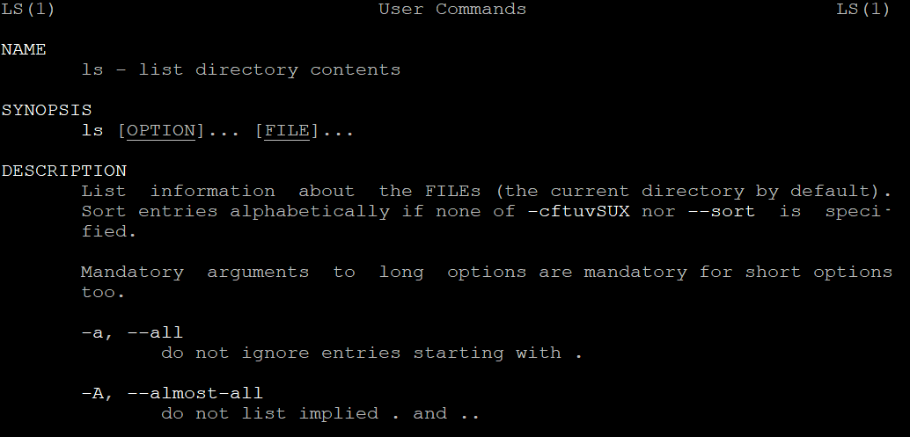

Linux中的man-pages项目#
https://www.kernel.org/doc/man-pages/ https://blog.csdn.net/Wyx_wx/article/details/79507823 https://www.cyberciti.biz/faq/howto-use-linux-unix-man-pages/
man 是 manual（手册） 的简写，在命令行执行 "man ls" 既可以出现关于 "ls" 命令或数据的详细操作说明:

其实这些文档都来自于一个叫做man-pages的项目:
man-pages项目是一组文档，由一个个的man-page组成，主要用于描述Linux内核和C库（主要是glibc）的API接口函数，以及Linux命令。
man-page#
一个man-page一般会包含以下信息：
| 标号 | 说明 |
|---|---|
| NAME | 命令名称 + 一个简短的描述，用于简要说明该命令的主要作用 |
| SYNOPSIS | 简短的命令执行语法简介 |
| DESCRIPTION | 较为完整的说明 |
| OPTIONS | 针对 SYNOPSIS 部分中，有列举的所有可用的选项说明 |
| COMMANDS | 当这个程序在执行的时候，可以在此程序中执行的命令 |
| FILES | 这个程序或数据所使用或参考或连接到的某些文件 |
| SEE ALSO | 这个命令或数据有相关的其他说明 |
| EXAMPLE | 一些可以参考的范例 |
| BUGS | 是否有相关的错误 |
以上这些内容并不一定都会全部出现在每一个man-page中，一般NAME, SYNOPSIS 和 DESCRIPTION是必须的。
man-pages的章节#
在man-pages项目中，这些man-page被分为8个章节（section）：
1: User commands; man-pages includes a very few Section 1 pages that document programs supplied by the GNU C library. 用户命令，比如ls cd pwd等
2: System calls documents the system calls provided by the Linux kernel. 系统调用API, 比如open(), write(), read()等
3: Library functions documents the functions provided by the standard C library. 标准C库函数，比如fopen(),fwrite(),fread()等
4: Devices documents details of various devices, most of which reside in /dev. 设备说明，这些设备一般位于/dev目录下，比如loop等
5: Files describes various file formats and filesystems, and includes proc(5), which documents the /proc file system. 文件格式和文件系统描述
7: Overviews, conventions, and miscellaneous. 概述，惯例和杂项
8: Superuser and system administration commands; man-pages includes a very few Section 8 pages that document programs supplied by the GNU C library. 系统管理员命令
我们使用 "man ls" 命令，打开关于 "ls" 的man-page，在左上角和右上角可以看到一个 "LS(1)" ，小括号里的1就表示该man-page是术语第一个章节的。
man命令#
建议查询 man page 时的步骤：
-
如果你对这个要查询的命令不熟悉，首先应查询该命令位于man-pages的哪一个章节
-
如果你确切的知道要查询的命令的名字，可以直接查询该命令所在的章节
$man -f ls
ls (1) - list directory contents
- 如果你不知道要查询的命令的完整名字，可以使用关键字查找
$man -k ls
2、然后在对应的章节中查看
注：章节1可以省略不写
$man ls
-
仔细看一下 DESCRIPTION， 学习一些细节
-
查询关于 OPTIONS 的部分，了解每个选项的意义
-
查看 SEE ALSO 来看一下还有那些东西可以使用
-
查看 FILES 部分的文件来参考
查询特定命令/文件的 man page 说明文件：
man -f [命令或数据]：
获取 [命令或数据] 的信息
下图执行: "man -f cal"